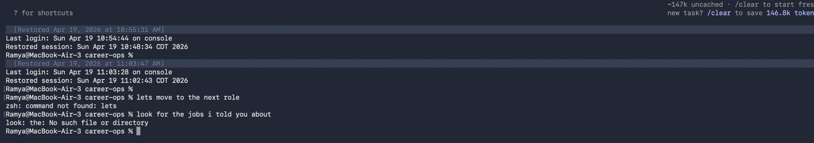

PM
Dashboard
A Power BI reporting tool that gave six Portfolio Managers at Mainstreet Advisors a real-time, single-screen view of their AUA, client health, and revenue — replacing hours of manual Excel work with an instant overview.

Final dashboard delivered in Power BI · Portfolio Manager: Bruce Simpson (dummy data shown)
Six managers.
Zero unified view.
"Every Monday morning I'm pulling three spreadsheets, cross-referencing account lists, and manually calculating growth. By the time I have the numbers, half the day is gone."
Mainstreet Advisors managed over $1.2B in assets under advisement across six Portfolio Managers. Each PM tracked their own book of business through a patchwork of Excel files, email threads, and manual lookups into the core CRM. There was no shared reporting standard, no live view of account health, and no way for a PM to know — at a glance — how their portfolio was performing against prior periods.
How might we give each Portfolio Manager a single, live screen that replaces their Monday morning spreadsheet ritual?
From raw Excel
to live Power BI
The project ran across four phases — from understanding what PMs actually needed to see, through data wrangling, design iteration, and final delivery.
Every section
earns its place
The layout follows a top-to-bottom information hierarchy: headline numbers → trend context → wallet positioning → revenue breakdown → client-level detail.
ADVISORS
(41.3%)
(58.7%)
| Institution Name | State | RM | Bank Assets 2024E | Current Accts | Current AUA | Growth Since | Accts | Run Rate | 2025E |
|---|---|---|---|---|---|---|---|---|---|
| Apex Community Bank & Trust | IL | AU | $158,729 | 88 | $100,638,234 | 93% | 0 | $216,228 | $219,895 |
| Birch Valley Trust | GA | AU | 1 | $22,322,741 | 26% | 0 | $66,972 | $65,370 | |
| Cedar Financial Partners | PA | JG | $131,421 | 5 | $22,311,800 | 15% | 0 | $62,472 | $61,404 |
| Dune State Savings Bank | WY | JG | $73,015 | 18 | $28,196,698 | 35% | 0 | $78,948 | $76,623 |
| Elmwood Southwest Bank | TX | JC | $352,519 | 2 | $46,986,521 | −445% | 0 | $100,248 | $107,488 |
| Fern Ridge State Bank | IL | AU | $211,474 | 48 | $31,972,954 | 128% | 2 | $89,520 | $86,013 |
| Average | $236,859 | 23 | $23,393,834 | −12% | 0 | $67,014 | $66,619 | ||
| Totals / Weighted Averages | 11 | $2,605,451 | 303 | $304,119,838 | −159% | 1 | $871,180 | $866,047 |
All figures shown above are illustrative dummy data for portfolio demonstration purposes
What changed
for the PMs
- 3–4 hours every Monday morning gathering and cross-referencing data
- No single view — at least 3 spreadsheets open simultaneously
- Data was days old by the time it was compiled
- Each PM used a different format — no cross-team consistency
- Growth calculations done by hand, prone to formula errors
- No visual context — everything in raw numbers
- Full portfolio picture available in under 10 seconds on load
- One screen: KPIs, trend charts, wallet share, and client table
- Live data connected to source — always reflects current state
- Standardised format across all 6 PMs — consistent review meetings
- DAX-calculated growth rates — no manual formulas, no errors
- Visual hierarchy guides attention: tiles → charts → detail table
Why it looks
the way it does
Every layout and colour choice was constrained by two things: Mainstreet Advisors brand guidelines and what PMs said they needed to trust on sight.